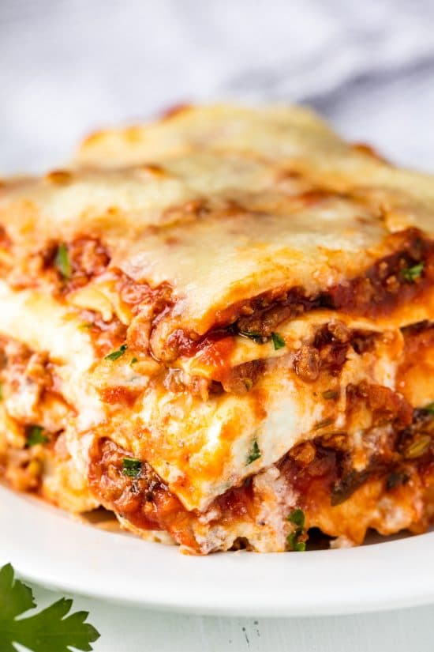

Lasagna

Description
This is a picture of lasagna, my favourite pasta dish!
Ingredients
- pasta sheets
- tomato paste
- tomatos (diced)
- minced beef
- minced pork
- salt and pepper
- celery
- carrot
- garlic
- onion
- cheese
- milk
- flour
- butter
Steps
- Brown off the beef and pork
- Cook down the vegetables
- Add diced tomatoes, tomato paste
- Separately, make a bechamel sauce
- When both are ready, layer the following:
- Very thin later of meat sauce
- Pasta sheet
- Meat sauce
- Bechamel
- Cook in the oven